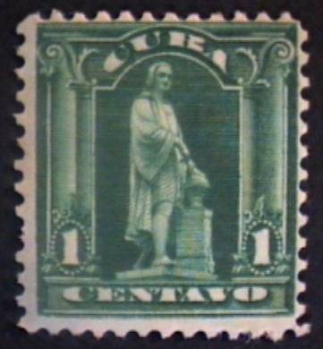
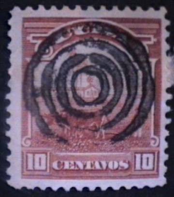

{kind=link}



Kuba
Return To Catalogue - Spanish Westindies - Cuba, Spanish colony - Cuba miscellaneous
Note: on my website many of the
pictures can not be seen! They are of course present in the
catalogue;
contact me if you want to purchase it.
1 c green (Statue of Columbus) 2 c red (Palm trees) 3 c lilac (Allegorical figure) 5 c blue (Sailship) 10 c brown (Ploughing farmer) Overprinted 'HABILITADO 1 UN CENTAVO OCTOBRE 1902' (red)

1 c on 3 c lilac
(Double and inverted overprint)
(Mystery: this overprint in black on a piece of paper?)
Value of the stamps |
|||
vc = very common c = common * = not so common ** = uncommon |
*** = very uncommon R = rare RR = very rare RRR = extremely rare |
||
| Value | Unused | Used | Remarks |
| 1 c | * | c | Both types |
| 2 c | * | c | Both types |
| 3 c | c | c | |
| 5 c | * | c | Cheapest type |
| 10 c | c | c | Cheapest type |
| 1 c on 3 c | * | * | Issued 1st October 1902, sold out in one day 200000 stamps surcharged, more information see: http://www.postalmuseum.si.edu/pichs/postal/republic01.html |
For the specialist: In 1905 the unsurcharged stamps of value 1 c, 2 c, 5 c and 10 c were re-issued in slightly different designs. The 1 c has the label with 'CENTAVO' with rounded edges, instead of with straight edges.
The different types of the values 1 c, 2 c, 5 c and 10 c (there is only 1 type of the 3 c):

1 c: In type I the shading behind 'CENTAVO' ends straight to the
left of the 'C' and the right of the 'O'. In type II it is shaped
with arcs.
2 c: In type I there are leafs coming out of the bottom of the ellipse containing the '2', these are missing in type II
5 c: In type II, in the label with 'CUBA' there are two small
dots in the upper left of the label (near 'C') and in the upper
right (near 'A') which are absent in Type I.
10 c: The line around 'CUBA' is different for the two types; left
and right there is a small extension in Type II (near the outer
border).
I have seen the 10 c value cancelled with a small circle with a 'T' in the center (telegraphic use).
Typical cancels:

(Oval consisting of bars and 4 concentric circles)

10 c orange (inscription 'Immediata') 10 c orange (inscription 'Inmediata', 1902)
Value of the stamps |
|||
vc = very common c = common * = not so common ** = uncommon |
*** = very uncommon R = rare RR = very rare RRR = extremely rare |
||
| Value | Unused | Used | Remarks |
| 10 c | *** | ** | Immediata |
| 10 c | * | * | Inmediata |

50 c blue and black 50 c violet and black (1910)
Value of the stamps |
|||
vc = very common c = common * = not so common ** = uncommon |
*** = very uncommon R = rare RR = very rare RRR = extremely rare |
||
| Value | Unused | Used | Remarks |
| 50 c blue and black | c | * | |
| 50 c violet and black | c | ** | |


1 c green and violet (B.Maso) 1 c green (B.Maso, 1911) 2 c red and green (M.Gomez) 2 c red (M.Gomez, 1911) 3 c violet and blue (J.Sangully) 5 c blue and green (Y Loynaz Agramonte) 5 c blue (Y Loynaz Agramonte, 1911) 8 c green and violet (C.Garcia) 8 c green and black (C.Garcia, 1911) 10 c brown and blue (Mayia) 1 P green and black (C.Roloff) 1 P black (C.Roloff, 1911)
The stamps printed in 1 colour exist imperforate at one or two sides, since the outer boundaries of the stamp sheets were imperforate.
Value of the stamps |
|||
vc = very common c = common * = not so common ** = uncommon |
*** = very uncommon R = rare RR = very rare RRR = extremely rare |
||
| Value | Unused | Used | Remarks |
| 1 c green and violet | * | c | |
| 1 c green | c | c | |
| 2 c red and green | * | c | |
| 2 c red | c | c | |
| 3 c | c | * | |
| 5 c blue and green | *** | * | |
| 5 c blue | c | c | |
| 8 c green and violet | * | * | |
| 8 c green and black | c | * | |
| 10 c | * | * | |
| 1 P green and black | R | *** | |
| 1 P black | R | R | |
10 c orange and blue
Value of the stamps |
|||
vc = very common c = common * = not so common ** = uncommon |
*** = very uncommon R = rare RR = very rare RRR = extremely rare |
||
| Value | Unused | Used | Remarks |
| 10 c | ** | ** | Seems to exist with inverted center: RRR |
1 c green 2 c red (2 shades) 3 c violet 5 c blue 8 c olive 10 c brown (2 shades) 50 c orange 1 P grey
The second shade of colour of the 2 c and 10 c were printed during the first world war, they are called war colours.
Value of the stamps |
|||
vc = very common c = common * = not so common ** = uncommon |
*** = very uncommon R = rare RR = very rare RRR = extremely rare |
||
| Value | Unused | Used | Remarks |
| 1 c | c | c | |
| 2 c | * | c | |
| 3 c | * | * | |
| 5 c | * | c | |
| 8 c | ** | * | |
| 10 c | *** | * | |
| 50 c | R | *** | |
| 1 P | R | *** | |
Stamps with overprint 'TIMBRE NACIONAL' are fiscal stamps, example:
(Reduced size)

10 c blue
Value of the stamps |
|||
vc = very common c = common * = not so common ** = uncommon |
*** = very uncommon R = rare RR = very rare RRR = extremely rare |
||
| Value | Unused | Used | Remarks |
| 10 c | ** | * | |
(Reduced size)
5 c blue
Value of the stamps |
|||
vc = very common c = common * = not so common ** = uncommon |
*** = very uncommon R = rare RR = very rare RRR = extremely rare |
||
| Value | Unused | Used | Remarks |
| 5 c | *** | * | |


1 c green (J.Marti) 2 c red (M.Gomez) 3 c violet (J.de la Luz) 5 c blue (G.Garcia) 8 c brown (Agramonte) 10 c brown (E.Palma) 20 c olive (J.A.Saco) 50 c red (A.Maceo) 1 P black (C.M Cespedes)
These stamps were issued with perforation 12 and no watermark. The values 1 c, 2 c, 5 c, 8 c, 10 c and 20 c also exist with watermark 'Star'.
Value of the stamps |
|||
vc = very common c = common * = not so common ** = uncommon |
*** = very uncommon R = rare RR = very rare RRR = extremely rare |
||
| Value | Unused | Used | Remarks |
| 1 c | c | vc | |
| 2 c | c | vc | |
| 3 c | * | vc | |
| 5 c | * | c | |
| 8 c | ** | * | |
| 10 c | * | c | |
| 20 c | ** | * | |
| 50 c | *** | *** | |
| 1 P | *** | *** | |
25 c violet
1 c green 2 c red 5 c blue 8 c brown 10 c brown 13 c orange 20 c olive 30 c violet 50 c red 1 P black
1 c green 2 c red 5 c blue 10 c brown 20 c violet
1 c green 2 c red 5 c blue 10 c brown 20 c violet
Sorry, no picture available yet
1 c red 2 c red 5 c red
A different shade of red of these stamps was issued in 1930.
Value of the stamps |
|||
vc = very common c = common * = not so common ** = uncommon |
*** = very uncommon R = rare RR = very rare RRR = extremely rare |
||
| Value | Unused | Used | Remarks |
| 1 c | ** | ** | |
| 2 c | ** | ** | |
| 5 c | *** | *** | |
5 c blue
This stamp was to be used on the Havana Key-West route. The stamp was issued on 1st November 1927, while the airmail service started at 28th October 1927.
5 c red
Issued during the visit of Lindbergh.
10 c on 25 c violet
This stamp was to be used on the aerial route between Havana and Santiago. It was apparently only used two days: 30 and 31st October 1930.
5 c green 8 c brown (1946?) 10 c blue 15 c red 20 c brown 30 c lilac 40 c orange 50 c green 1 P black Overprinted 'PRIMER TREN AEREO INTERNACIONAL 1935 O'Maaray du Pont' (1935) 10 c + 10 c red (perforated, color of basic stamp changed) 10 c + 10 c red (imperforate, color of basic stamp changed)
5 c lilac 10 c black 20 c red 20 c lilac (1946?) 50 c blue Overprinted 'EXPERIMENTO DEL COHETE POSTAL ANO DE 1939' 10 c green (colour of basic stamp changed)
5 c violet 10 c orange 20 c green 50 c black Airmail express stamp 'CORREOS ENTRADA AEREA ESPECIAL' 15 c blue
5 c violet 10 c brown
5 c orange
{kind=link}
{kind=link}